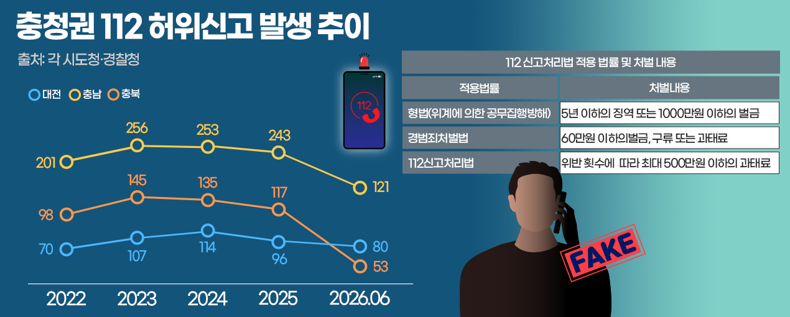

위계에 의한
공무집행방해
5년 이하 징역또는 1000만원 이하 벌금
폭발물 설치나 흉기 난동 등 중대한 범죄가 발생한 것처럼 속여 대규모 출동을 유도한 경우 적용할 수 있다.
INTERACTIVE NEWS
장난전화에서 AI 음성 변조와 온라인 공모까지
진화하는 허위신고, 처벌은 따라가지 못했다
취재 윤소리 · 그래픽 자료 제공 이미지 활용
“○○고등학교에 폭발물을 설치했다.”
“오전 10시 폭발할 것.”
허위로 의심돼도 경찰은 실제 상황을 전제로 출동해야 한다.
01
112신고처리법은 2024년 7월 시행됐다. 그러나 지난해 허위신고는 5107건으로 집계됐다.
2025년 전국 허위신고
하루 평균 약
출처: 경찰청. 2024년 7월 112신고처리법 시행.
02
대전·충남·충북 모두 2023년 전후 증가한 뒤 증감을 반복했다. 2026년 수치는 6월까지의 누계다.
※ 2026년은 6월까지 집계. 출처: 각 시도청·경찰청.

03
신고 내용의 중대성, 반복성, 고의성, 행위자의 상태를 종합해 형사입건·즉결심판·과태료 가운데 처분이 결정된다.
폭발물 설치나 흉기 난동 등 중대한 범죄가 발생한 것처럼 속여 대규모 출동을 유도한 경우 적용할 수 있다.
일반적인 허위신고는 대부분 경범죄처벌법에 따라 처리돼 왔다.
경범죄처벌법의 낮은 제재 수준을 보완하기 위해 2024년 7월 시행됐다.
“어떤 법을 적용할지 판단할 구체적인 내부 기준은 충분한가”
04
2025년 충남청 허위신고 243건 가운데 기사에서 확인된 주요 처분 유형을 시각화했다.
※ 전체 243건과 기사에 제시된 세부 처분 합계 240건 사이에 3건 차이가 있어, 임의로 유형을 추가하지 않았다.
대전의 60대 여성은 2022년 5월부터 2023년 4월까지 경찰에 장난전화를 걸다 재판에 넘겨졌다.
이후에도 장난전화를 반복하면서 처벌 실효성을 둘러싼 논란이 제기됐다.
CASE 02
05
허위신고는 반복 전화 수준을 넘어 타인 사칭, 온라인 역할 분담, AI 음성 변조, 해외 플랫폼·서버 이용으로 고도화되고 있다.
음주 상태나 개인적 이유로 반복 신고.
명의·전화번호를 도용해 신고자를 숨김.
디스코드 등에서 역할을 나눠 범행.
실제 목소리처럼 꾸며 초기 식별을 방해.
국내 기관만으로 추적하기 어려운 구조.
테러·인질극 등 중대한 범죄가 발생한 것처럼 속여 경찰특공대 등 대규모 출동을 유도하는 허위신고 범죄. 국내 사건은 기사에서 ‘스와팅과 유사한 양상’으로 설명됐다.
06
신고 접수 단계에서 허위 여부를 단정할 수 없기 때문이다. 아래 선택지를 눌러 결과를 확인해 보자.
07
전문가들은 처분의 일관성, 위험도에 따른 차등 대응, AI 악용 기준, 국내외 공조체계를 함께 보완해야 한다고 제안했다.
사건별 편차를 줄이고 현장 판단의 일관성을 높인다.
단순 장난과 폭발물·흉기 난동 허위신고를 구분해 대응한다.
계획성과 고의성이 인정되는 AI 음성 변조 수법을 별도로 고려한다.
해외 서버와 IP를 이용한 범죄에 대응할 협력체계를 강화한다.
“허위신고는 처벌받는다는 설명을 넘어, 왜 시민 안전과 공권력을 위협하는 범죄인지 알려야 한다.”